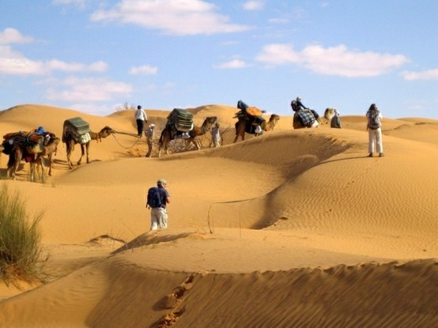
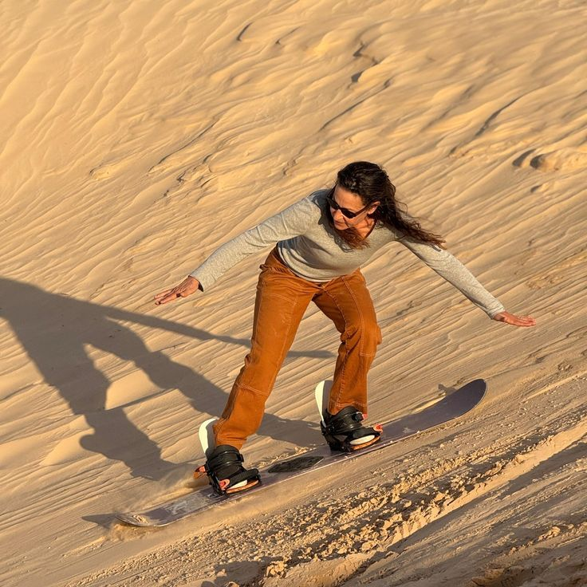
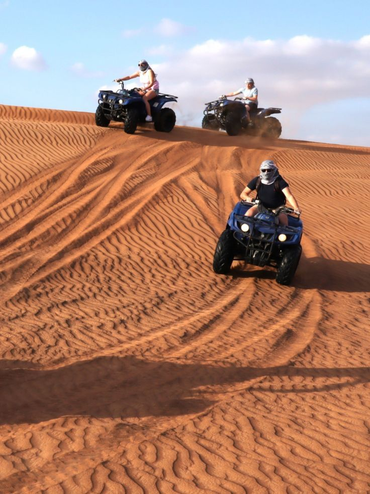

The Tunisian Sahara is far more than just sand; it is a world of breathtaking silence, eternal beauty, and deep-rooted traditions. As the gateway to the Great Desert, it offers an unparalleled escape where the horizon meets an endless ocean of golden dunes. Beyond the famous oases like Douz, known as the "Gateway to the Sahara," and the lush palm groves of Tozeur, the desert hides treasures like Ksar Ghilane, where you can swim in natural hot springs surrounded by the vast dunes of the Grand Erg Oriental.
For adventure seekers, the Tunisian Sahara is a playground for Quad biking, 4x4 expeditions, and sandboarding. For those seeking peace, there is nothing more magical than a night spent in a Bedouin-style camp, haring stories around a crackling bonfire and waking up to a sunrise that paints the dunes in shades of fire and gold. From the surreal, shimmering salt flats of Chott el Djerid to the iconic, otherworldly landscapes used as film sets for Star Wars, every corner of the Tunisian desert tells a story of wonder, resilience, and absolute serenity.
Must-Experience Saharan Highlights: Starry Nights & Traditional Camps: Experience authentic hospitality under one of the clearest night skies in the world. Ancient Ksours & Tozeur’s Architecture: Explore the unique brickwork of Tozeur and the hilltop granaries (Ksours) of Tataouine and Chenini.



Leave the modern world behind and step into the vastness of the Grand Erg Oriental. From the back of a camel or the seat of a 4x4, Douz offers an adrenaline-fueled entry into the world’s most famous desert. Experience the raw beauty of the Saharan landscape, camp under a canopy of a billion stars, and discover the deep-rooted traditions of the M’razig people. Your adventure begins where the road ends

sahra.jpg)
sahra.jpg)
Tozeur is a breathtaking fusion of lush palm groves and dramatic desert landscapes. Known for its unique yellow-brick architecture and the sprawling "Palmeraie" (one of the largest in Tunisia), it feels like a living mirage. Beyond the city limits, the landscape turns into a cinematic wonderland—from the jagged Atlas Mountains and the hidden waterfalls of Chebika and Tamerza to the vast, shimmering salt flats of Chott el Djerid. It is a place where you can walk through a forest of dates in the morning and stand on the desert planet of Star Wars (Mos Espa) by sunset. Tozeur isn't just a desert; it’s an oasis of culture, history, and surreal natural beauty.
The true difference between Tozeur and Douz lies in their landscapes and soul. Douz is the gateway to the "Grand Erg Oriental," where the world turns into a sea of soft , golden sand dunes that stretch forever; it is the land of the nomadic M’razig and the ultimate destination for deep-desert camping. Tozeur, on the other hand, is a masterpiece of contrast, where lush, massive palm forests sit at the foot of the rugged Atlas Mountains. While Douz offers the silence of the dunes, Tozeur offers the drama of mountain oases like Chebika, the shimmering mystery of the Chott el Djerid salt flats, and unique yellow-brick architecture that feels like ancient art. In short: visit Douz to lose yourself in the sand, but visit Tozeur to discover the secrets of the stones and the palms.
| Caractéristique | Douz (Sahara) | Tozeur (Oasis) |
|---|---|---|
| Paysage Principal | Dunes de sable (Grand Erg) | Montagnes et Palmeraies |
| Architecture | Style Nomade | Briques jaunes typiques |
| Activité Phare | Balade à dos de chameau | Visite de Star Wars (Mos Espa) |
| Nature | Désert infini | Cascades et Canyons |
Matmata and Tataouine represent the raw, mystical heart of the Tunisian south, where history is carved directly into the earth. Matmata is world-famous for its unique troglodyte architecture—subterranean homes dug deep into the ground by Berber tribes to escape the desert heat. Walking through these crater-like dwellings feels like stepping onto another planet, which is exactly why it was chosen as the home of Luke Skywalker in the Star Wars saga.
A short journey away lies Tataouine, a land of rugged mountains and majestic Ksours (fortified granaries). These ancient stone structures, like Ksar Ouled Soltane, stand as desert skyscrapers with their arched "ghorfas" (storage rooms) stacked high against the sky. While the rest of the Sahara is known for its sand, this region is a masterpiece of stone, heritage, and Berber soul. It is a place where time stands still, offering a glimpse into a lifestyle that has survived for centuries in one of the most dramatic landscapes on Earth.
nkhall.jpg)


The gateway to the mountain oases and Star Wars film sets.
The final frontier before the infinite dunes of the Grand Erg.
Deep into the troglodyte homes and ancient Berber Ksours.
Relaxing in hot springs surrounded by the golden sands.
Beyond the dunes, a world of excitement and peace awaits you. Choose your Saharan experience.

Explore the golden dunes of Douz at the rhythm of the desert. Feel the peace of the Sahara at sunset.
Authentic
Grab a board and surf down the steepest dunes. It’s the desert version of snowboarding!
Fun
Navigate the challenging slopes of the Grand Erg Oriental for an adrenaline-fueled desert safari.
Exciting
Experience the true nomadic life by sleeping in a traditional Berber tent. Enjoy the warmth of a campfire and the silence of the dunes for a night you will never forget.
Serene & WildPreparation is key to enjoying the vastness of the desert. Here is what we recommend you bring for a comfortable journey.
Light cotton for the day, but a warm jacket for the chilly desert nights.
Comfortable, closed shoes to walk easily on the soft sand dunes.
High-SPF sunscreen, polarized sunglasses, and a traditional "Chèche" scarf.
Always carry a reusable water bottle to stay hydrated under the sun.